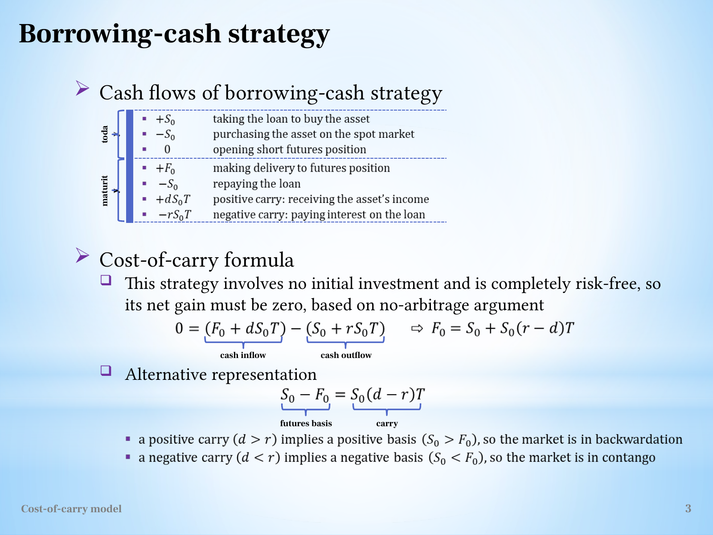

Derive two-sided cost of carry and interpret spot–futures basis
Explanation, worked examples and practice
Useful first: Convert futures quotations into payoff and conditional loss bounds, Interpret basis and explain conditional convergence, Build daily margin accounts and reconcile trading result
Outcome and conditions
Construct both reversible replication packages, derive simple-rate fair delivery price and basis, calculate high/low quote payoffs and qualify feasibility. All essential components listed in metadata are required. Hypothetical assessment values instantiate the checked equations; they are not historical observations or current contract terms. Independent checks are closed-note and without hints, solution access, external retrieval or other assistance; a basic arithmetic calculator is allowed. Teach establishes and records actual help/exposure conditions before claiming independence.
Prerequisites and checks
Check the prerequisites
- O002 outcome and repair route: signed cash gains and quotation units determine replication flows.
- O006 outcome and repair route: basis convention and delivery matching establish what is being compared.
- O003 outcome and repair route: daily margin funding is distinct from aggregate terminal payoff.
O014-P1, item_version 1, prerequisite_diagnostic. Prompt: A matching unit is bought for \(100\) with a \(100\) loan and a short future. Opening net investment? If futures exceed spot at maturity under executable delivery, which side profits? Can a hedge with a fixed final net price still require interim margin deposits, and why?
Complete key and rubric: \(+100-100+0=0\); buy spot and deliver into the short if the delivery price exceeds matching spot. A futures short is distinct from borrowing the underlying. A daily adverse futures settlement can reduce the account below maintenance and require top-ups even when the matching final spot leg offsets it; final net price is not interim funding. Require zero net funding, direction/sign and this timing distinction; repair O006 for delivery convergence, O002 for signs/units, O003 for margin timing. Pass requires every requested reason and result; partial for an omitted reason or unresolved isolated arithmetic slip; fail for the conflicting mechanism. This diagnostic never counts as acquisition. Current or explicitly compatible committed independent prerequisite evidence may permit skipping its check; familiarity alone cannot. Use the cited complete prerequisite lesson or the named included foundation, then the worked example, after a partial/failing entry check.
Motivation, intuition, and definitions
Construct both reversible replication packages, derive simple-rate fair delivery price and basis, calculate high/low quote payoffs and qualify feasibility. The central question is which dated cash flows cancel and which risk remains. Match quantities and dates before simplifying an equation. The complete reused passages establish every academic claim, notation choice and qualification assessed here; necessary prerequisites use the complete lessons above.
Explanation steps
Origin: reused complete note introduction before the first subsection, Cost of carry and calendar spreads, fingerprint 7d0cb65d0bdf8c6f222c869632fef0242c46c9fb942547642920f337cf57f28d.
Cost of carry and calendar spreads
What determines a fair delivery price when an asset can be bought today, financed, and held until delivery? The lecture answers by constructing two ways to obtain the same asset at the same date. Comparing their cash flows removes the need to predict the future spot price. This is the core of Week 3 because currency, bond and index pricing are applications of the same replication logic. L12(CostOfCarryModel).pptx, physical slide 2–5

This source-grounded map follows physical slides 2–10; the present note develops slides 2–5, with the applications in the other Week 3 notes. L12(CostOfCarryModel).pptx, physical slide 2–10
Source passage
Origin: reused complete checked passage Foundations and conventions; fingerprint 7d0cb65d0bdf8c6f222c869632fef0242c46c9fb942547642920f337cf57f28d. Heading depth alone is adapted.
Foundations and conventions
\(S_0\) is today's spot price per unit of the underlying, \(F_0\) today's agreed delivery price per unit, and \(T\) the time to maturity in years. Annual decimal rates \(d\) and \(r\) represent respectively income/benefits and holding costs. The source lists coupons, dividends and convenience yield under \(d\), and interest, insurance, storage and deterioration under \(r\). In the linear model, income is \(dS_0T\), cost is \(rS_0T\), and net carry is \(S_0(d-r)T\). No particular calendar day-count basis is supplied. L12(CostOfCarryModel).pptx, physical slide 2–4
A long commits to buy and a short to sell. The foundational distinction is between paying for an asset now and agreeing a delivery price now: entering the idealized forward/futures position has zero opening value, whereas acquiring the asset costs \(S_0\). A financed spot position can nevertheless have zero net opening investment because the loan receipt pays for the purchase. No-arbitrage rules out a feasible zero-investment package with a sure positive payoff; if both the package and its reverse can be traded, its riskless payoff must be zero. These are model conditions, not a promise that any real investment earns a guaranteed return. L12(CostOfCarryModel).pptx, physical slide 2–4
Source passage
Origin: reused complete checked passage Borrow cash, buy spot and sell futures; fingerprint 7d0cb65d0bdf8c6f222c869632fef0242c46c9fb942547642920f337cf57f28d. Heading depth alone is adapted.
Borrow cash, buy spot and sell futures
At time zero borrow \(S_0\), pay it to buy one unit, and short one matching futures contract. Opening cash is \(+S_0-S_0+0=0\). At maturity the asset is delivered for \(F_0\), the loan principal \(S_0\) and its interest \(rS_0T\) are repaid, and the asset's income \(dS_0T\) is received. Under the source's deterministic simple-rate/timing assumptions,
Setting this to zero and collecting \(S_0\) terms gives
Financing raises the delivery price; income received while holding the asset lowers the net cost of replicating delivery. If quoted \(F_0\) exceeds this value, the package earns a sure positive modeled payoff: buy the asset cheaply through spot plus financing and sell the expensive delivery commitment. L12(CostOfCarryModel).pptx, physical slide 3

Source slide 3: opening loan/purchase cancel, and maturity inflows equal maturity outflows at the fair price. The asset's uncertain resale price does not enter because the asset is delivered under the agreed contract. L12(CostOfCarryModel).pptx, physical slide 3
Source passage
Origin: reused complete checked passage Borrow the asset, sell spot and buy futures; fingerprint 7d0cb65d0bdf8c6f222c869632fef0242c46c9fb942547642920f337cf57f28d. Heading depth alone is adapted.
Borrow the asset, sell spot and buy futures
For the reverse strategy, borrow the asset, sell it for \(S_0\), invest the proceeds and open a long matching futures position. Opening net cash is again zero. At maturity the deposit returns \(S_0+rS_0T\). Pay \(F_0\) to take delivery, return the asset to its owner and compensate the owner for income \(dS_0T\). Thus
This is the negative of the first payoff. If \(F_0\) is too low, buy delivery cheaply and sell the asset now. When both strategies are feasible, neither sign can generate a riskless gain, forcing the equality above. In this strategy \(r\) is the modeled deposit return, whereas slide 3 uses it as financing cost; the common rate and reversible cash flows are substantive assumptions. Shorting restrictions or different borrowing/lending terms can replace one exact price by a range. L12(CostOfCarryModel).pptx, physical slide 4
Source passage
Origin: reused complete checked passage Basis, carry, contango and backwardation; fingerprint 7d0cb65d0bdf8c6f222c869632fef0242c46c9fb942547642920f337cf57f28d. Heading depth alone is adapted.
Basis, carry, contango and backwardation
The course defines basis as spot minus futures, \(B_0=S_0-F_0\). Therefore
If \(d>r\), net carry and basis are positive, so \(F_0<S_0\): the lecture calls this backwardation. If \(d<r\), carry and basis are negative, so \(F_0>S_0\): contango. If \(d=r\), \(F_0=S_0\). These price relations follow from the stated model and sign convention. A positive cost of carry \(r-d\) has the opposite sign to positive net carry \(d-r\); interchanging the terms reverses the conclusion. No forecast of future spot prices follows solely from these inequalities. L12(CostOfCarryModel).pptx, physical slide 3–4
Source passage
Origin: reused complete checked passage What makes the replication valid; fingerprint 7d0cb65d0bdf8c6f222c869632fef0242c46c9fb942547642920f337cf57f28d. Heading depth alone is adapted.
What makes the replication valid
The lecture's linear rates, known income/costs, tradeable underlying, available short sales, matching delivery and locked funding underpin the derivation. A convenience benefit from physical ownership need not be a cash coupon transferable to a short seller. Thus listing convenience yield on slide 2 does not establish that every asset supports both exact arbitrages. External qualification: Damodaran's NYU “Futures Arbitrage,” sections “Storable Commodities” and “Stock Index Futures,” explains that funding differences, shorting costs and uncertain dividends weaken exact replication. These are reasons to inspect feasibility before applying the equation. Damodaran, consulted sections. L12(CostOfCarryModel).pptx, physical slide 2–5
The source aggregates all futures flows at delivery. Actual futures have daily variation margin, as explained in the Week 1 margin note. That cash timing, funding and reinvestment can matter; this note preserves the lecture's simplified replication rather than treating a forward-style cash-flow table as a complete margin-funding model. The simple formula also differs from compounded conventions: do not replace it silently by an exponential. L12(CostOfCarryModel).pptx, physical slide 3–5
Worked example
O014-W1, item_version 1, worked_example. Prompt: One unit of a hypothetical storable asset costs \(S_0=100\) currency units. Annual simple holding/funding cost is \(r=0.06\) and known transferable income yield \(d=0.02\); delivery is in \(T=0.5\) years. Assume reversible borrowing/lending/shorting, equal relevant rates, matching asset/delivery, deterministic cash income, and aggregate terminal futures flows. Construct both zero-net-opening-investment strategies with every terminal flow; derive and calculate fair \(F_0\) and spot-minus-futures basis. Explain contango/backwardation and what it says about a future-spot forecast. Evaluate delivery quotes \(103.500000\) and \(100.500000\) and give the feasible arbitrage direction and profit per unit for each. Finally identify why convenience benefits, shorting/funding restrictions or daily margin could invalidate the exact equality.
Complete solution and essential rubric: Borrow \(100\), buy one unit and short the delivery commitment: opening \(+100-100=0\), terminal \(F_0+dS_0T-S_0-rS_0T\). Reverse: borrow/sell one unit, invest \(100\) and go long; terminal \(S_0+rS_0T-F_0-dS_0T\). The payoffs are negatives under the stated identical reversible terms. Zeroing either gives \(F_0=S_0[1+(r-d)T]=102.000000\) and \(B_0=S_0-F_0=-2.000000\). The futures price exceeds spot, so this is contango. These are current model price relations, not a forecast of terminal spot. At the high quote, borrow cash/buy spot/short delivery; profit is \(103.500000+0.02(100)(0.5)-100-0.06(100)(0.5)=1.500000\). At the low quote, borrow asset/sell spot/invest/go long; profit is \(100+0.06(100)(0.5)-100.500000-0.02(100)(0.5)=1.500000\). A nontransferable convenience benefit is not necessarily cash that a short can compensate, and asymmetric funding or shorting restrictions can prevent reversing the package. Daily variation-margin dates create funding/reinvestment effects omitted by this terminal model; exact equality is conditional, not universal. All requested calculations, derivations and qualifications are essential; the component map above applies to every full form.
Practice with fading assistance
Write your reasoning, then reveal the complete key to check each step.
A local draft for your own study.
Reveal explanation
Complete solution and essential rubric: Borrow \(80\), buy one unit and short the delivery commitment: opening \(+80-80=0\), terminal \(F_0+dS_0T-S_0-rS_0T\). Reverse: borrow/sell one unit, invest \(80\) and go long; terminal \(S_0+rS_0T-F_0-dS_0T\). The payoffs are negatives under the stated identical reversible terms. Zeroing either gives \(F_0=S_0[1+(r-d)T]=77.600000\) and \(B_0=S_0-F_0=2.400000\). The futures price is below spot, so this is backwardation. These are current model price relations, not a forecast of terminal spot. At the high quote, borrow cash/buy spot/short delivery; profit is \(79.600000+0.05(80)(1)-80-0.02(80)(1)=2.000000\). At the low quote, borrow asset/sell spot/invest/go long; profit is \(80+0.02(80)(1)-75.600000-0.05(80)(1)=2.000000\). A nontransferable convenience benefit is not necessarily cash that a short can compensate, and asymmetric funding or shorting restrictions can prevent reversing the package. Daily variation-margin dates create funding/reinvestment effects omitted by this terminal model; exact equality is conditional, not universal. All requested calculations, derivations and qualifications are essential; the component map above applies to every full form.
Allowed support is the first cash-flow identity only; hide the remaining key while the learner completes it. Supported performance is practice, not an independent result.
Rubric and independence
Self-assessment criteria and tutor checks
Required components: zero_opening_and_both_terminal_packages, fair_price_basis_and_arbitrage_direction, conventions_forecast_and_implementation_limits. Each full prompt/key below elicits every component; all are necessary for a pass on every permitted pair. Accept algebraically equivalent expressions and clearly defined opposite cash-flow signs with correct interpretation. A pass requires all requested outputs/reasons, correct units/assumptions and no critical conceptual error. Partial means a missing component or an unresolved isolated arithmetic slip with an otherwise valid method; independent correction is required for a pass. Fail means a critical mechanism/condition is wrong. Unscorable means a response or its help/exposure conditions cannot be established. Unknown help conditions are never independent evidence.
Critical errors: Wrong arbitrage direction; net carry confused with cost of carry; margin/income treated as unconditional riskless funding; simple formula silently replaced by compounding.
Acquisition requires two distinct unused unassisted full checks selected from the six exact metadata routes. Every I/D form covers all components; W1, S1, the prerequisite and C1 are forbidden substitutes. A D form used for acquisition cannot later be counted again as delayed success. No teach-generated item may replace a named full check; additional verified explanation/practice is allowed under the unchanged method and may not fabricate evidence. If fewer than two fresh forms remain for acquisition, return a plan_issue for an additional prepared bank.
| Component | I1 | I2 | D1 | D2 |
|---|---|---|---|---|
| zero_opening_and_both_terminal_packages | required | required | required | required |
| fair_price_basis_and_arbitrage_direction | required | required | required | required |
| conventions_forecast_and_implementation_limits | required | required | required | required |
Misconceptions and correction
An observed omitted term/sign is tentative until the learner explains it; compare the reasoning with the critical errors above. Score the original response before providing help. Route a conceptual failure to the relevant included derivation and prerequisite, then use an unused full form.
O014-C1, item_version 1, narrow_correction. Prompt: A cash-flow derivation has replaced an uncertain terminal price by its expectation and then calls its realized payoff guaranteed. Is the inference justified, and what must a riskless replication establish instead? Key/rubric: No: an expectation is not a realized amount. Matching feasible dated inflows/outflows must cancel uncertain states or contract the necessary conversions. Pass requires the distinction and matching condition; partial for missing one, fail for equating expectation with certainty. This repairs a common inference only; it cannot substitute for a full numerical/capability check.
Give at most two hints (first identify the date/unit, second point to the included identity); after ineffective hints show the relevant worked step. After two unsuccessful independent attempts stop repeated quizzing, revisit the explanation/prerequisite and preserve the unresolved status.
Immediate and delayed checks
Write your reasoning, then reveal the complete key to check each step.
A local draft for your own study.
Reveal explanation
Complete solution and essential rubric: Borrow \(120\), buy one unit and short the delivery commitment: opening \(+120-120=0\), terminal \(F_0+dS_0T-S_0-rS_0T\). Reverse: borrow/sell one unit, invest \(120\) and go long; terminal \(S_0+rS_0T-F_0-dS_0T\). The payoffs are negatives under the stated identical reversible terms. Zeroing either gives \(F_0=S_0[1+(r-d)T]=123.600000\) and \(B_0=S_0-F_0=-3.600000\). The futures price exceeds spot, so this is contango. These are current model price relations, not a forecast of terminal spot. At the high quote, borrow cash/buy spot/short delivery; profit is \(124.600000+0.03(120)(0.75)-120-0.07(120)(0.75)=1.000000\). At the low quote, borrow asset/sell spot/invest/go long; profit is \(120+0.07(120)(0.75)-122.600000-0.03(120)(0.75)=1.000000\). A nontransferable convenience benefit is not necessarily cash that a short can compensate, and asymmetric funding or shorting restrictions can prevent reversing the package. Daily variation-margin dates create funding/reinvestment effects omitted by this terminal model; exact equality is conditional, not universal. All requested calculations, derivations and qualifications are essential; the component map above applies to every full form.
I1/I2 are immediate checks; D1/D2 are distinct parallel variants reserved where possible for delayed checks. A delayed success requires an unused form before recap, no help/solution access, and at least 24 actual elapsed hours after acquisition and the most recent relevant teaching/solution exposure. Record intervening exposure. A calendar-date change alone is insufficient; an early D attempt is immediate evidence only.
A local draft for your own study.
Reveal explanation
Complete solution and essential rubric: Borrow \(200\), buy one unit and short the delivery commitment: opening \(+200-200=0\), terminal \(F_0+dS_0T-S_0-rS_0T\). Reverse: borrow/sell one unit, invest \(200\) and go long; terminal \(S_0+rS_0T-F_0-dS_0T\). The payoffs are negatives under the stated identical reversible terms. Zeroing either gives \(F_0=S_0[1+(r-d)T]=197.000000\) and \(B_0=S_0-F_0=3.000000\). The futures price is below spot, so this is backwardation. These are current model price relations, not a forecast of terminal spot. At the high quote, borrow cash/buy spot/short delivery; profit is \(200.000000+0.06(200)(0.5)-200-0.03(200)(0.5)=3.000000\). At the low quote, borrow asset/sell spot/invest/go long; profit is \(200+0.03(200)(0.5)-194.000000-0.06(200)(0.5)=3.000000\). A nontransferable convenience benefit is not necessarily cash that a short can compensate, and asymmetric funding or shorting restrictions can prevent reversing the package. Daily variation-margin dates create funding/reinvestment effects omitted by this terminal model; exact equality is conditional, not universal. All requested calculations, derivations and qualifications are essential; the component map above applies to every full form.
A local draft for your own study.
Reveal explanation
Complete solution and essential rubric: Borrow \(90\), buy one unit and short the delivery commitment: opening \(+90-90=0\), terminal \(F_0+dS_0T-S_0-rS_0T\). Reverse: borrow/sell one unit, invest \(90\) and go long; terminal \(S_0+rS_0T-F_0-dS_0T\). The payoffs are negatives under the stated identical reversible terms. Zeroing either gives \(F_0=S_0[1+(r-d)T]=91.350000\) and \(B_0=S_0-F_0=-1.350000\). The futures price exceeds spot, so this is contango. These are current model price relations, not a forecast of terminal spot. At the high quote, borrow cash/buy spot/short delivery; profit is \(92.550000+0.02(90)(0.25)-90-0.08(90)(0.25)=1.200000\). At the low quote, borrow asset/sell spot/invest/go long; profit is \(90+0.08(90)(0.25)-90.150000-0.02(90)(0.25)=1.200000\). A nontransferable convenience benefit is not necessarily cash that a short can compensate, and asymmetric funding or shorting restrictions can prevent reversing the package. Daily variation-margin dates create funding/reinvestment effects omitted by this terminal model; exact equality is conditional, not universal. All requested calculations, derivations and qualifications are essential; the component map above applies to every full form.
A local draft for your own study.
Reveal explanation
Complete solution and essential rubric: Borrow \(150\), buy one unit and short the delivery commitment: opening \(+150-150=0\), terminal \(F_0+dS_0T-S_0-rS_0T\). Reverse: borrow/sell one unit, invest \(150\) and go long; terminal \(S_0+rS_0T-F_0-dS_0T\). The payoffs are negatives under the stated identical reversible terms. Zeroing either gives \(F_0=S_0[1+(r-d)T]=147.750000\) and \(B_0=S_0-F_0=2.250000\). The futures price is below spot, so this is backwardation. These are current model price relations, not a forecast of terminal spot. At the high quote, borrow cash/buy spot/short delivery; profit is \(150.250000+0.04(150)(0.75)-150-0.02(150)(0.75)=2.500000\). At the low quote, borrow asset/sell spot/invest/go long; profit is \(150+0.02(150)(0.75)-145.250000-0.04(150)(0.75)=2.500000\). A nontransferable convenience benefit is not necessarily cash that a short can compensate, and asymmetric funding or shorting restrictions can prevent reversing the package. Daily variation-margin dates create funding/reinvestment effects omitted by this terminal model; exact equality is conditional, not universal. All requested calculations, derivations and qualifications are essential; the component map above applies to every full form.
Content provenance and generation boundaries
Sources and scope
Explanations, figures and qualifications above reuse complete checked-note sections with exact origin/fingerprint; heading depth alone is adapted. Main exercises and worked arithmetic are plan-created hypothetical instantiations of those displayed identities. No additional academic claims or external course scope are introduced. Preserve simple/compound conventions explicitly. Supplemental NDF/peg and implementation qualifications originate in the checked notes and their cited verified references, not an independent raw-source audit by plan. New numerical practice can use the same method only after its complete solution and unchanged components are checked before display; it cannot replace this lesson’s named evidence forms. Prerequisites route to the complete prepared lessons above.
Try a carry calculation
This illustrative calculation uses the prepared two-sided cost-of-carry model: identical spot and delivery assets, one common simple annual financing rate, and no storage charges, income, transaction costs or margin-financing differences. The calculation is a model implication under those assumptions.
Let the spot price be \(S_0=100\), the simple annual rate \(r=0.06\), and delivery occur after \(T=0.5\) years. What is the no-arbitrage futures price in this model?
Reveal explanation
Financing spot purchase costs \(S_0(1+rT)=100(1+0.06\times0.5)=103\) at delivery. The year fraction and annual rate must match. The reverse strategy supplies the opposite inequality when the asset can be borrowed and sold, giving equality under the model assumptions. Different financing, storage, income or trading constraints can change the relationship.
Cost of carry and calendar spreads
Read the full checked source context
What determines a fair delivery price when an asset can be bought today, financed, and held until delivery? The lecture answers by constructing two ways to obtain the same asset at the same date. Comparing their cash flows removes the need to predict the future spot price. This is the core of Week 3 because currency, bond and index pricing are applications of the same replication logic. L12(CostOfCarryModel).pptx, physical slide 2–5
This source-grounded map follows physical slides 2–10; the present note develops slides 2–5, with the applications in the other Week 3 notes. L12(CostOfCarryModel).pptx, physical slide 2–10
Foundations and conventions
\(S_0\) is today's spot price per unit of the underlying, \(F_0\) today's agreed delivery price per unit, and \(T\) the time to maturity in years. Annual decimal rates \(d\) and \(r\) represent respectively income/benefits and holding costs. The source lists coupons, dividends and convenience yield under \(d\), and interest, insurance, storage and deterioration under \(r\). In the linear model, income is \(dS_0T\), cost is \(rS_0T\), and net carry is \(S_0(d-r)T\). No particular calendar day-count basis is supplied. L12(CostOfCarryModel).pptx, physical slide 2–4
A long commits to buy and a short to sell. The foundational distinction is between paying for an asset now and agreeing a delivery price now: entering the idealized forward/futures position has zero opening value, whereas acquiring the asset costs \(S_0\). A financed spot position can nevertheless have zero net opening investment because the loan receipt pays for the purchase. No-arbitrage rules out a feasible zero-investment package with a sure positive payoff; if both the package and its reverse can be traded, its riskless payoff must be zero. These are model conditions, not a promise that any real investment earns a guaranteed return. L12(CostOfCarryModel).pptx, physical slide 2–4
Borrow cash, buy spot and sell futures
At time zero borrow \(S_0\), pay it to buy one unit, and short one matching futures contract. Opening cash is \(+S_0-S_0+0=0\). At maturity the asset is delivered for \(F_0\), the loan principal \(S_0\) and its interest \(rS_0T\) are repaid, and the asset's income \(dS_0T\) is received. Under the source's deterministic simple-rate/timing assumptions,
Setting this to zero and collecting \(S_0\) terms gives
Financing raises the delivery price; income received while holding the asset lowers the net cost of replicating delivery. If quoted \(F_0\) exceeds this value, the package earns a sure positive modeled payoff: buy the asset cheaply through spot plus financing and sell the expensive delivery commitment. L12(CostOfCarryModel).pptx, physical slide 3
Source slide 3: opening loan/purchase cancel, and maturity inflows equal maturity outflows at the fair price. The asset's uncertain resale price does not enter because the asset is delivered under the agreed contract. L12(CostOfCarryModel).pptx, physical slide 3
Borrow the asset, sell spot and buy futures
For the reverse strategy, borrow the asset, sell it for \(S_0\), invest the proceeds and open a long matching futures position. Opening net cash is again zero. At maturity the deposit returns \(S_0+rS_0T\). Pay \(F_0\) to take delivery, return the asset to its owner and compensate the owner for income \(dS_0T\). Thus
This is the negative of the first payoff. If \(F_0\) is too low, buy delivery cheaply and sell the asset now. When both strategies are feasible, neither sign can generate a riskless gain, forcing the equality above. In this strategy \(r\) is the modeled deposit return, whereas slide 3 uses it as financing cost; the common rate and reversible cash flows are substantive assumptions. Shorting restrictions or different borrowing/lending terms can replace one exact price by a range. L12(CostOfCarryModel).pptx, physical slide 4
Basis, carry, contango and backwardation
The course defines basis as spot minus futures, \(B_0=S_0-F_0\). Therefore
If \(d>r\), net carry and basis are positive, so \(F_0<S_0\): the lecture calls this backwardation. If \(d<r\), carry and basis are negative, so \(F_0>S_0\): contango. If \(d=r\), \(F_0=S_0\). These price relations follow from the stated model and sign convention. A positive cost of carry \(r-d\) has the opposite sign to positive net carry \(d-r\); interchanging the terms reverses the conclusion. No forecast of future spot prices follows solely from these inequalities. L12(CostOfCarryModel).pptx, physical slide 3–4
Carry between two delivery dates
Let \(F_0^1,F_0^2\) be current prices for deliveries at \(T^1<T^2\), both measured in years, and put \(\Delta T=T^2-T^1\). Today go long the earlier contract, short the later one, and arrange a forward loan for the interval \([T^1,T^2]\). The source assigns zero initial cash to each agreement. At \(T^1\) draw \(F_0^1\) under the arranged loan and pay the earlier contract to acquire the asset. Hold it only for \(\Delta T\); the source measures income and financing cost relative to the amount \(F_0^1\) financed. At \(T^2\) deliver for \(F_0^2\) and repay the loan:
Moving the delivery-price terms to one side gives
The earlier-minus-later spread equals carry over the intervening interval. Using \(T^2\) instead of \(T^2-T^1\) would charge for time before the asset was acquired. Using \(S_0\) rather than \(F_0^1\) would change the financing base in the source's construction. This is a separate interval model with funding terms locked today, not a license to combine inconsistent rates across maturities. L12(CostOfCarryModel).pptx, physical slide 5
What makes the replication valid
The lecture's linear rates, known income/costs, tradeable underlying, available short sales, matching delivery and locked funding underpin the derivation. A convenience benefit from physical ownership need not be a cash coupon transferable to a short seller. Thus listing convenience yield on slide 2 does not establish that every asset supports both exact arbitrages. External qualification: Damodaran's NYU “Futures Arbitrage,” sections “Storable Commodities” and “Stock Index Futures,” explains that funding differences, shorting costs and uncertain dividends weaken exact replication. These are reasons to inspect feasibility before applying the equation. Damodaran, consulted sections. L12(CostOfCarryModel).pptx, physical slide 2–5
The source aggregates all futures flows at delivery. Actual futures have daily variation margin, as explained in the Week 1 margin note. That cash timing, funding and reinvestment can matter; this note preserves the lecture's simplified replication rather than treating a forward-style cash-flow table as a complete margin-funding model. The simple formula also differs from compounded conventions: do not replace it silently by an exponential. L12(CostOfCarryModel).pptx, physical slide 3–5